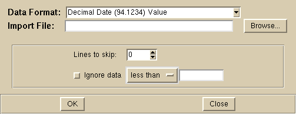

Import [File Menu]

Import allows you to read files that are in several
different standard formats, but are located in a different location from
the standard location.
This routine differs from 'Open' in that the
file location is specified by the user, and the time period is not specified;
all of the data in the file is used.
The following are the options of the Import dialog box:
-
Data Format
- Specify the format of the data file. The available formats
are:
- Decimal Date (1994.1234) Value
A file with two columns, the first columnn is the decimal date,
the second column the value. The decimal date used a 4 digit format
for the year.
- Decimal Date (94.1234) Value
A file with two columns, the first columnn is the decimal date,
the second column the value. The decimal date used a 2 digit format
for the year.
- Year Month Day Hour Value
A file with the date in calendar format, including the hour.
- Year Month Day Value
A file with the date in calendar format.
- Year Month Value
A file with the date in calendar format. Only the year and
month are specified.
- Sta Year Month Day Hour Value
A file with the date in calendar format, including the hour.
The date is preceeded by a column, such as a station code.
- Sta Year Month Day Value
A file with the date in calendar format.
The date is preceeded by a column, such as a station code.
- Sta Year Month Value
A file with the date in calendar format. Only the year and
month are specified.
The date is preceeded by a column, such as a station code.
-
Import File
- An entry box where the user specifies the file name.
The user can browse through the file system directory and select
a file by pressing the Browse... button.
-
Data Selection Options
- Parts of the file can be ignored using these options:
-
Lines to skip
- If there are any lines at the beginning of the file
that should not be used, enter that number here.
-
Ignore data
-
If this checkbox is selected, than the user can specify
data to be ignored if it is less than, equal to, or greater
than some value.
Action Buttons
-
OK
- Opens the selected file, calculates the curve fits,
plots the results, and dismisses the dialog box.
-
Close
- Close: Dismisses the dialog box and takes no action.